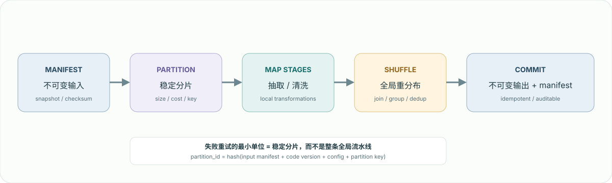
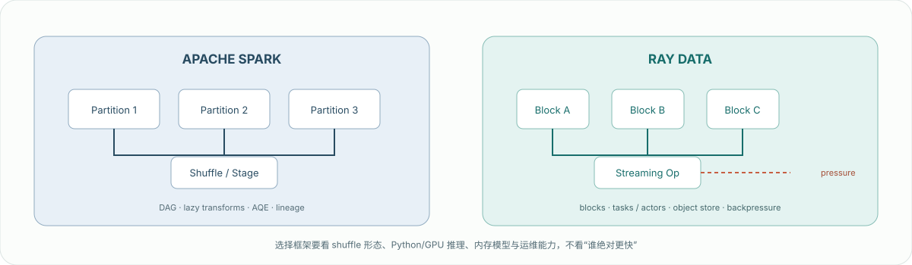

MODULE 15 / LLM DATA ENGINEERING
分布式数据处理架构
理解 Spark 与 Ray Data 的执行模型、Shuffle、分区倾斜、Backpressure、Checkpoint 与幂等提交。
一个过滤函数在一万条文档上跑得很快，不代表它能在数百 TB 的语料上跑得好。分布式数据工程的核心不是把 Python 代码复制到更多机器，而是设计可分片、可观测、可重试、能控制数据重分布成本的执行图。
先看一条可恢复的数据生产线

一个大规模数据管线通常包括读取、解析、局部过滤、语言或来源分桶、全局去重/聚合、写出和质量验收。最容易并行的是彼此独立的局部 map 阶段；最昂贵的阶段通常是需要把相同 key 的记录重新放到一起的 join、group、sort 或去重。
分区：决定并行度，也决定失败半径
分区（partition）是调度和重试的基本单位。理想的分区应该工作量接近、能够独立提交、可从输入清单重新构造，并且不会因为单个超大文件或热门 key 变成 straggler。
- 按输入文件 / snapshot：适合抓取快照、WARC 文件和独立数据源；要注意单文件大小差异。
- 按语言 / 来源：适合语言专属模型、规则或统计；要监控低资源语言的小分区和英语大分区的不平衡。
- 按 hash bucket：适合全局去重、连接和分布式索引；相同 key 必须能被稳定路由到可比较的分区。
- 按估算处理成本：当文档长度、HTML 复杂度或模型推理成本差异大时，比单纯按记录数更合理。
不要把 128 MB、1 GB 或“每个分区跑 10 分钟”当成普适常数。应从实际压缩后字节数、解压膨胀率、文档长度分布、UDF 峰值内存和失败重试成本做 profiling，再调节目标分区大小。
Shuffle：为什么 groupBy / join 可能变成瓶颈
Spark 的 shuffle 会在分区之间重新分配数据，使同一个 key 的记录能够聚集到一起。它涉及网络传输、序列化、磁盘 I/O 和排序/聚合。一次 map-only 过滤通常不需要全局重分布；按域名 groupBy、join 或全局去重则可能需要 shuffle。
数据倾斜（skew）发生在少数 key 拥有远多于其他 key 的记录时。例如一个超热门域名可能形成巨大的单分区，导致其他 task 已完成而一个 straggler 仍在运行。可采用两阶段聚合、hot-key salting、AQE skew join optimization，或把热点 key 单独处理。

Spark：DAG、Shuffle 与 Adaptive Query Execution
Spark 的 RDD / DataFrame 转换通常是 lazy 的；action 触发作业执行。Spark SQL 的 Adaptive Query Execution（AQE）会根据运行时统计重新优化计划，包括合并 shuffle 后的小分区、处理 skew join，以及在满足条件时调整 join 策略。
from pyspark.sql import functions as F
spark.conf.set("spark.sql.adaptive.enabled", "true")
docs = spark.read.parquet("s3://bucket/normalized/")
# Grouping by a key is a global operation and may introduce a shuffle.
counts = docs.groupBy("language").agg(F.count("*").alias("documents"))
counts.explain("formatted")
# Reliable checkpointing truncates lineage; configure durable storage first.
spark.sparkContext.setCheckpointDir("s3://bucket/checkpoints/job-v3/")
stable = counts.checkpoint(eager=True)cache() / persist() 用于复用计算结果；丢失的缓存分区通常可根据 lineage 重算。可靠 checkpoint() 将结果写入配置的可靠存储并截断父 lineage。localCheckpoint() 则使用 executor 本地缓存层，可能牺牲容错性。三者不能混为一谈。
Ray Data：Blocks、Streaming Operators 与 Backpressure
Ray Data 将 Dataset 表示为 blocks，并通过物理 operators 连接读、map、shuffle 和写出。Streaming execution 不必等上游整个 operator 完成才启动下游；调度器会考虑资源和 operator queue，并避免继续向已 backpressured 的下游投放任务。对模型推理，map_batches 可用 stateless task，也可用 callable class 变成持有模型状态的 actor。
import ray
class Scorer:
def __init__(self):
from transformers import pipeline
self.model = pipeline("text-classification", model="your-model")
def __call__(self, batch):
batch["score"] = [
self.model(text)[0]["score"] for text in batch["text"]
]
return batch
ds = ray.data.read_parquet("s3://bucket/normalized/")
scored = ds.map_batches(
Scorer,
compute=ray.data.ActorPoolStrategy(size=4),
batch_size=32,
# Set num_gpus only when the model and cluster are configured for GPU.
)Ray Data 的 object store、UDF heap 和系统内存是不同资源池；backpressure 会限制过量生产，object store 压力下也可能 spill 到磁盘。批量推理还提供 job-level checkpointing，用于在任务失败后从已处理进度恢复。具体行为与 Ray 版本、execution config 和 sink 有关。
重试不等于 exactly-once：幂等写入才是关键
任务失败后重跑可能再次执行外部副作用：重复写对象、重复发消息、重复更新数据库计数。不能因为 Spark 或 Ray 能重试 task，就假设业务写入自动 exactly-once。
import hashlib
def stable_partition_id(manifest_sha, config_sha, code_sha, shard_id):
material = "|".join([manifest_sha, config_sha, code_sha, shard_id])
return hashlib.sha256(material.encode("utf-8")).hexdigest()
# Use the ID as an idempotency key:
# 1. write each shard to a unique immutable output prefix;
# 2. validate row count / checksum / schema;
# 3. commit a manifest only after validation;
# 4. retries reuse the same key and do not double-count outputs.对于对象存储，不要未经验证就假设 rename 是原子操作。应使用适配存储系统的 commit protocol、不可变 shard 输出和最后提交的 manifest。记录输入版本、代码 commit、配置 hash、模型版本、处理计数、失败计数和输出 checksum，才能回答“这个训练样本从哪里来”。
交互练习：分区大小如何影响任务数量？
下面以 2 TiB 输入做纯算术估算。它只计算理论分区数，不预测实际运行时间；真实任务数还受文件可切分性、压缩格式、并行槽位、数据倾斜和调度开销影响。
什么时候选 Spark，什么时候选 Ray Data？
| 维度 | Spark | Ray Data |
|---|---|---|
| 主要抽象 | RDD / DataFrame / SQL、partition、stage | Dataset blocks、operators、task / actor |
| 典型强项 | 结构化 ETL、SQL、join、group、成熟 shuffle 与 AQE | Python UDF、模型 batch inference、actor 常驻模型、streaming pipeline |
| 要重点监控 | shuffle read/write、spill、skew、executor memory、task retries | object store、UDF heap、block queues、backpressure、spill-to-disk |
| 恢复方式 | lineage 重算、可靠 checkpoint、输出 commit protocol | task/actor retry、job-level checkpoint（支持的工作流）、幂等 sink |
| 选择原则 | 若核心是大规模结构化重分布，优先评估 Spark | 若核心是 Python/模型推理流式处理，优先评估 Ray Data |
它们不是互斥阵营。可以用 Spark 做大规模清洗和全局 join，再把模型推理子任务交给 Ray；也可以在同一框架内完成全流程。真正的选择依据是数据形态、shuffle 需求、模型驻留方式、存储布局、团队运维能力和实测成本。
参考资料
- Apache Spark, RDD Programming Guide，RDD、lazy evaluation、shuffle 与 persistence。
- Apache Spark, SQL Performance Tuning，AQE、partition coalescing 和 skew join optimization。
- Apache Spark, RDD.checkpoint API，可靠 checkpoint 的行为。
- Ray, Ray Data Internals，streaming execution、backpressure、memory model。
- Ray, Dataset.map_batches，stateless task 与 stateful actor 模式。
- Ray, Offline Batch Inference，batch inference 与 job-level checkpointing。
- CCNet, Extracting High Quality Monolingual Datasets from Web Crawl Data，分布式语料处理背景。